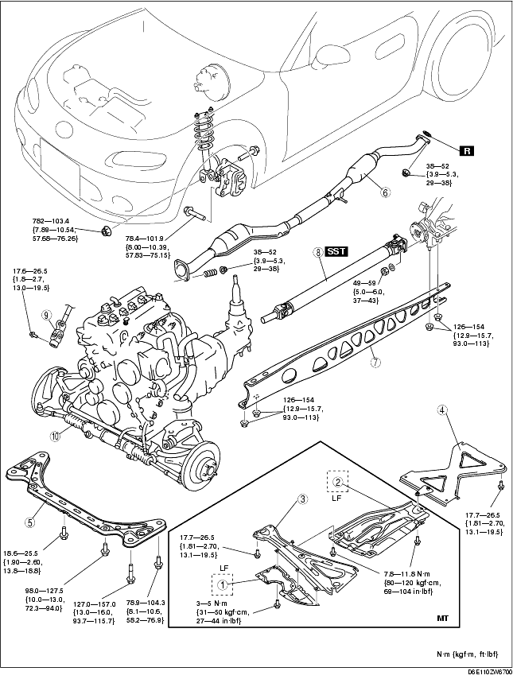
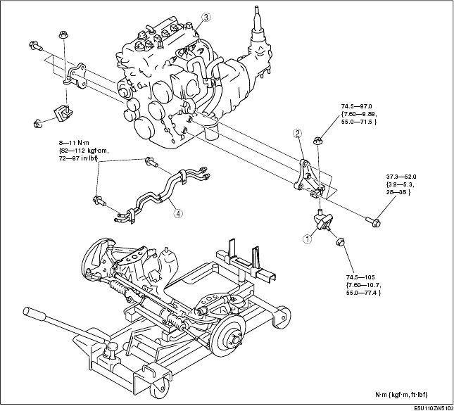

Workshop Manual ➭ ENGINE ➭ MECHANICAL[L8, LF] ➭ ENGINE REMOVAL/INSTALLATION [L8, LF]
ENGINE REMOVAL/INSTALLATION [L8, LF]
id0110a9800400
{: #wp1059781}
Warning
• Fuel is very flammable liquid. If fuel spills or leaks from the pressurized fuel system, it will cause serious injury or death and facility breakage. Fuel can also irritate skin and eyes. To prevent this, always complete the "Fuel Line Safety Procedure", while referring to the "BEFORE SERVICE PRECAUTION".
*Note*{: #wp1059807}
• Remove the engine, transmission, and crossmember component as a single unit from under the vehicle.
-
Perform "Fuel Line Safety Procedures". Leave the fuel pump relay removed. (See BEFORE SERVICE PRECAUTION [L8, LF].)
-
Drain the engine coolant. (See ENGINE COOLANT REPLACEMENT [L8, LF].)
-
Remove the following parts:
(1) The front wheel and tires (See GENERAL PROCEDURES (SUSPENSION).) {: #wp1059875}(2) The plug hole plate (See PLUG HOLE PLATE REMOVAL/INSTALLATION [L8, LF].) {: #wp1059893}(3) The battery cover, battery, battery box, battery tray and battery duct (See BATTERY REMOVAL/INSTALLATION [L8, LF].) {: #wp1059911}(4) The air cleaner (See INTAKE-AIR SYSTEM REMOVAL/INSTALLATION [L8, LF].) {: #wp1059929}(5) The throttle body (See INTAKE-AIR SYSTEM REMOVAL/INSTALLATION [L8, LF].) {: #wp1059947}(6) The PCM, PCM duct and air cleaner insulator (See PCM REMOVAL/INSTALLATION [L8, LF].) {: #wp1059965}(7) The coolant reserve tank (See COOLANT RESERVE TANK REMOVAL/INSTALLATION [L8, LF].) {: #wp1059983}(8) The console (See CONSOLE REMOVAL/INSTALLATION.)
-
Disconnect the P/S oil pump hoses and drain the P/S fluid reservoir. (See POWER STEERING OIL PUMP REMOVAL/INSTALLATION.)
-
Remove the splash shield, under cover and mud guards.
-
Remove the generator duct. (See GENERATOR REMOVAL/INSTALLATION [L8, LF].)
-
Drain the transmission oil (MT) or ATF (AT). (See TRANSMISSION OIL REPLACEMENT [M15M-D].) (See TRANSMISSION OIL REPLACEMENT [P66M-D].) (See AUTOMATIC TRANSMISSION FLUID (ATF) REPLACEMENT [SJ6A-EL].)
-
Disconnect the brake vacuum hose.
-
Disconnect the quick release connector from the dynamic chamber. (See QUICK RELEASE CONNECTOR (EMISSION SYSTEM) REMOVAL/INSTALLATION [L8, LF].)
-
Disconnect the quick release connector from the fuel distributor. (See BEFORE SERVICE PRECAUTION [L8, LF].) (See QUICK RELEASE CONNECTOR (FUEL SYSTEM) REMOVAL/INSTALLATION [L8, LF].)
-
Remove the drive belt. (See DRIVE BELT REPLACEMENT [L8, LF].)
-
Remove the A/C compressor with the pipes connected and secure the A/C compressor using wire or rope so that it is out of the way.
-
Disconnect the water hose and heater hose.
-
Secure the caliper (front) using wire or rope so that it is out of the way.
-
Disconnect the wiring harness.
-
Disconnect front ABS wheel-speed sensor connector. (See FRONT ABS WHEEL-SPEED SENSOR REMOVAL/INSTALLATION.)
-
Remove the radiator. (See RADIATOR REMOVAL/INSTALLATION [L8, LF].)
-
AT
• Disconnect the manual shaft lever component. (See AUTOMATIC TRANSMISSION REMOVAL/INSTALLATION [SJ6A-EL].)
MT
• Remove the clutch release cylinder with the pipes connected and secure the clutch release cylinder using wire or rope so that it is out of the way. (See CLUTCH RELEASE CYLINDER REMOVAL/INSTALLATION.) {: #wp1060297}• Remove the shift lever knob. (See TRANSMISSION REMOVAL/INSTALLATION [M15M-D].) (See TRANSMISSION REMOVAL/INSTALLATION [P66M-D].)
- Remove the engine, transmission, and crossmember component using an engine lifter in the order indicated in the table.
Warning
• Remove the engine, transmission and crossmember carefully, holding it steady. If the transmission falls it could be damaged or cause injury.

|
Under guard (MT)(LF) {: #wp1060406} |
|
|---|---|
|
2 {: #wp1060479} |
Insulator (MT)(LF) {: #wp1060482} |
|
3 {: #wp1060486} |
Member bracket (MT) {: #wp1060489} |
|
4 {: #wp1060523} |
Tunnel member {: #wp1060526} |
|
5 {: #wp1060540} |
Transverse member {: #wp1060543} |
|
6 {: #wp1060557} |
Middle pipe {: #wp1060560} (See EXHAUST SYSTEM REMOVAL/INSTALLATION [L8, LF].) {: #wp1060576} |
|
7 {: #wp1060588} |
Power plant frame {: #wp1060591} (See Power Plant Frame Removal Note.) {: #wp1060609} (See Power Plant Frame Installation Note.) {: #wp1060623} (See Power Plant Frame Removal Note.) {: #wp1060637} (See Power Plant Frame Installation Note.) {: #wp1060651} (See Power Plant Frame Removal Note.) {: #wp1060665} (See Power Plant Frame Installation Note.) {: #wp1060679} |
|
8 {: #wp1060691} |
Propeller shaft {: #wp1060694} (See PROPELLER SHAFT REMOVAL/INSTALLATION.) {: #wp1060724} |
|
9 {: #wp1060736} |
Bolt (Intermediate Shaft) {: #wp1060739} (See STEERING GEAR AND LINKAGE REMOVAL/INSTALLATION.) {: #wp1060771} (See STEERING GEAR AND LINKAGE REMOVAL/INSTALLATION.) {: #wp1060785} |
|
10 {: #wp1060797} |
Engine, transmission, crossmember component {: #wp1060800} (See Engine, Transmission, Crossmember Component Removal Note.) {: #wp1060836} |
- Remove the engine and transmission from the crossmember component lifter in the order indicated in the table by suspending them with a crane.{: #wp1060894}

|
Engine mount rubber {: #wp1060926} |
|
|---|---|
|
2 {: #wp1060999} |
Engine mount bracket {: #wp1061002} |
|
3 {: #wp1061006} |
Engine, transmission {: #wp1061009} |
|
4 {: #wp1061043} |
Oil pipe, oil hose {: #wp1061046} (See Oil Pipe, Hose clamp, Oil hose Installation Note.) {: #wp1061062} |
-
Install in the reverse order of removal.
-
Start the engine and inspect and adjust the following:
• Pulley and belt for runout, tension, and contact {: #wp1061100}• Leakage of engine oil, engine coolant, ATF, MT oil, and fuel {: #wp1061114}• Ignition timing, idle speed, and idle mixture (CO and HC) (See ENGINE TUNE-UP [L8, LF].) {: #wp1061124}• Front wheel alignment (See FRONT WHEEL ALIGNMENT.) {: #wp1061142}• Engine-driven accessories operation
- Perform the on-road test and verify that there is no vibration or noise.
Engine, Transmission, Crossmember Component Removal Note
- Secure the engine, transmission, and crossmember component using an engine lifter.